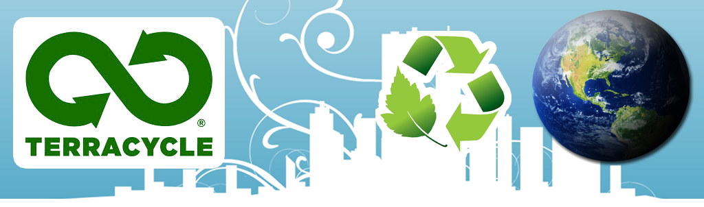

        <div data-role="view" id="terracycle-tabstrip" data-title="Terracycle" style="background-color: #f3f3f3;">
            <div data-role="content" align="center" text-align="center">
                <ul data-role="listview" data-inset="true" data-theme="b">
                    <li>
                        <span class="basictext"> <br> <br> <br> </span><span class="textheader" data-localize="titeltext_terra">Terracycle </span><span class="basictext"> <br> </span>
                        <div align="left">
                            <span class="basictext" id="result_box" data-localize="terratext" >TerraCycle's purpose is to eliminate the idea of waste. We do this by creating national recycling systems for
                                previously non-recyclable or hard-to-recycle waste. Anyone can sign up for these
                                programs, called the Brigades, and start sending us waste.<br> <br>
                                TerraCycle then converts the collected waste into a wide variety of products and
                                materials. With more than 20 million people collecting waste in over 20 countries
                                TerraCycle has diverted billions of units of waste and used them to create over
                                1,500 different products available at major retailers ranging from Walmart to Whole
                                Foods Market. <br> <br>
                                Our goal is to eliminate the idea of waste by creating collection and solution systems
                                for anything that today must be sent to a landfill. <br> <br>
                                Founded in 2001 by Tom Szaky, then a 20-year-old Princeton University freshman,
                                TerraCycle began by producing organic fertilizer, packaging liquid worm poop in
                                used soda bottles. Since then TerraCycle has grown into one of the fastest-growing
                                green companies in the world.
                                
                            </span>
                        </div>
                        <br>
                        <br>
                    </li>
                </ul>
            </div>       
        </div>